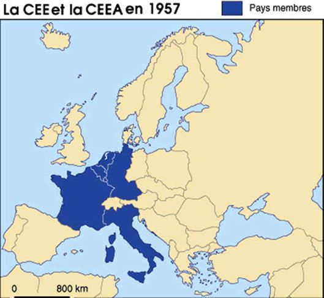
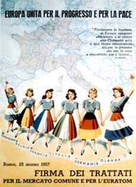
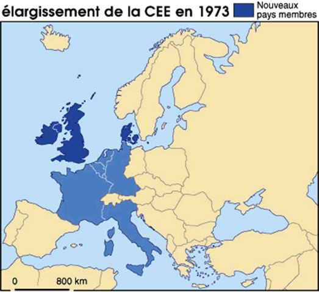
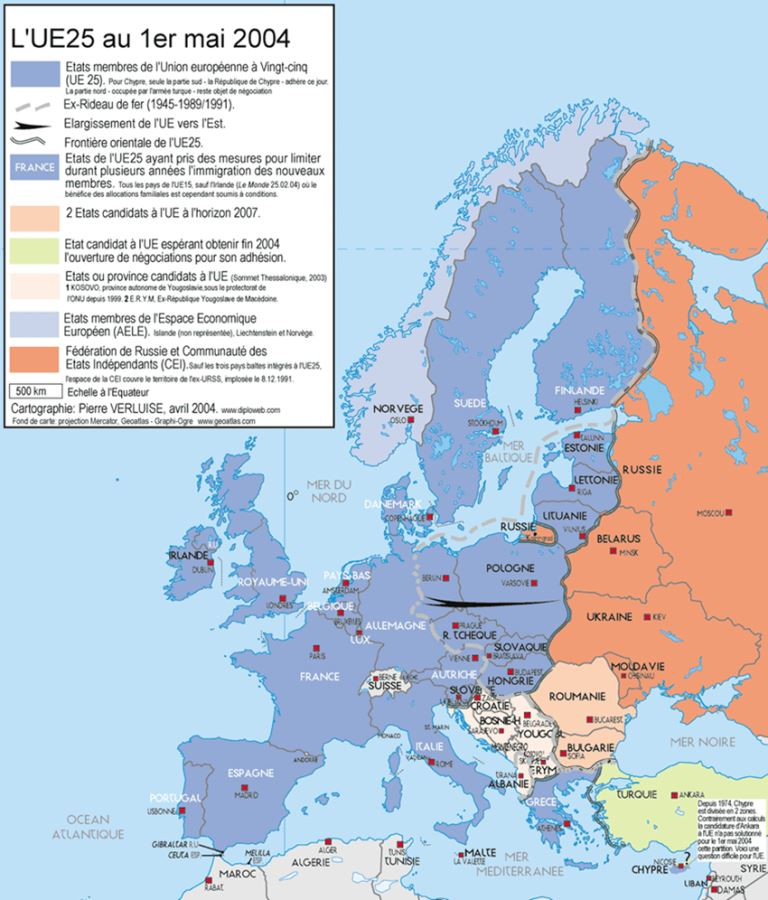
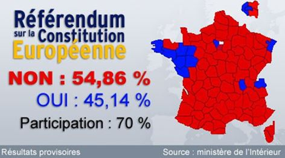
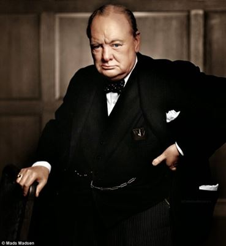
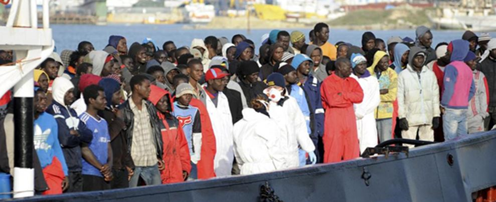
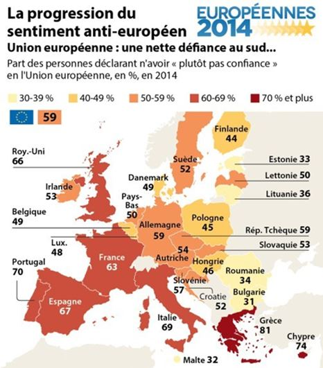
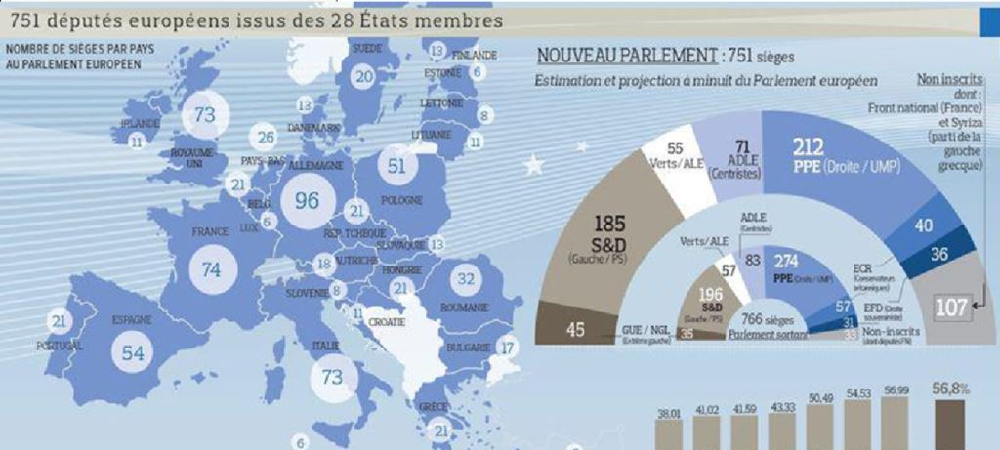

« Le scénario catastrophique, que tout le monde craignait, est devenu une réalité. Aujourd'hui, la désintégration de l'UE est presque inévitable » - Аinsi le financier George Soros a commenté les résultats du référendum au Royaume-Uni du 26 juin 2016 sur la sortie de l'Union européenne (Котова, 2016). Le Centre de recherche américain Stratfor a déclaré : « Durant ces dernières années, nous avons vu que l'Union européenne se dirige vers la désintégration...
L'Europe va rapidement vers la séparation en blocs régionaux » (Stratfor, 2016). Frank-Walter Steinmeier, ministre allemand des Affaires étrangères, a nommé ce référendum « une triste journée pour l'Europe et le Royaume-Uni » (Резчиков, Богданов, 2016), et Michael Anthony McFaul, ancien ambassadeur américain en Russie, - « une grande victoire pour la politique étrangère de Poutine » (Файнберг, 2016).
Pourquoi l'UE a commencé à perdre son attrait avec le risque de devenir un « homme malade de l'Eurasie » (Международный дискуссионный клуб «Валдай», 2017, p. 9) ?
Pour répondre à cette question, nous devons examiner l'histoire du projet européen et la tracer jusqu'à nos jours (Smith, 1992, Бутл 2015). L'Union européenne a été créé comme une union économique de parallèle à l'OTAN qui aurait contribué à un développement réussi des pays non communistes du continent et à surmonter la peur et la méfiance mutuelle des Européens arriérées en particulier dans le XX siècle.
Le 9 mai 1950, Robert Schuman, ministre français des Affaires étrangères, comme une mesure préventive du conflit entre l'Allemagne et la France, proposa de créer la Communauté européenne du charbon et de l'acier (CECA). Le traité de Paris mis en place un marché commun du charbon et de l'acier, dans lequel, avec la France et l'Allemagne, sont entrés l’Italie, la Belgique, le Luxembourg et les Pays-Bas.
En 1957, tous les États-membres de la Communauté européenne du charbon et de l'acier créèrent la Communauté économique européenne (CEE). Selon le traité de Rome, le but de la CEE est une mise en place d’une union douanière (une suppression progressive des droits de douane et des restrictions quantitatives dans le commerce mutuel), la politique agricole commune, la libre circulation des capitaux, d’une main-d’œuvre et des services entre les pays-membres de la CEE.
Pour les pays qui ne figurent pas dans la CEE, furent établis des tarifs douaniers communs.
En 1965, le Traité de Bruxelles rationalisa les institutions paneuropéennes et détermina la composition du Conseil européen.
En 1986, fut adopté l'Acte unique européen qui étend l'application du principe du vote à la majorité qualifiée au sein du Conseil, en raison de quoi il fut devenu plus difficile de bloquer des actes juridiques généraux pour les pays-membres.
En 1992, fut signé le traité de Maastricht qui ouvrit la voie à la création de l'Union monétaire européenne et introduisit des éléments bien accentués de l'union politique à la CEE (la citoyenneté, les politiques étrangères et intérieures communes). Ensuite, la CEE fut rebaptisée l'Union européenne (l’UE).
En 1995, fut entré en vigueur l'accord de Schengen, qui abolit le contrôle des passeports et visas aux frontières des sept États-membres de l'UE : la Belgique, la France, l’Allemagne, le Luxembourg, les Pays-Bas, le Portugal et l’Espagne. Plus tard, les autres pays y ont rejoint.
En 2001, le traité de Nice remplaça le principe précédent de l'unanimité au sein du Conseil européen pour la prise de décision dans les 27 domaines différents par le principe de la majorité qualifiée, ce qui a rendu encore plus difficile la possibilité de bloquer des solutions communes de l'UE pour les États individuels.
À partir du 1er janvier 2002, un certain nombre de pays de l'Union européenne passa à la nouvelle monnaie unique - l'euro, qui, pendant trois ans avant, fut utilisé pour les paiements sans numéraire.
Le 1er mai 2004 l'Union européenne tint la plus grande expansion ponctuelle : les dix nouveaux États, dont sept anciens États-membres du bloc de l'Est, fut intégrés à l’Union.
Le 29 octobre 2004 les présidents de tous les 25 États-membres de l’UE signèrent le Traité de Rome, comprenant le projet de la Constitution européenne. Le projet consistait en 448 articles, se composait des quatre parties et du préambule (les objectifs et le sens de la fondation de l'UE). La première partie du document contenait les principes juridiques fondamentaux de la Constitution (la fondation de l'Union, ses valeurs, l'état du droit européen, la répartition des compétences entre les États-membres et l'UE, les institutions de l’UE, la procédure de sortie de l'UE) ; la deuxième partie comprenait la Charte des droits fondamentaux en tant que partie juridique de la Constitution ; la troisième partie contenait les principales directions de la politique ; la quatrième - la procédure de ratification.
Lors des référendums, tenus le 29 mai et le 1er juin 2005 en France et aux Pays-Bas respectivement, le projet de la Constitution européenne fut rejeté.
Malgré les résultats des référendums, en décembre 2007, fut signé le traité de Lisbonne, qui en fait devint un substitut à la Constitution européenne.
Il élargit en outre l'éventail des questions sur lesquelles le vote est réalisé par la majorité qualifiée. Le traité établit également la personnalité juridique de l'UE (une possibilité, dans certains cas, de conclure des accords internationaux dans tous les domaines de sa compétence) et établit un nouveau poste de Président de l'Union.
Le document contenait un article qui prescrivit pour la première fois une procédure de sécession de l'Union. En cela, le rédacteur du paragraphe No 50 (l’article 50), lui-même, Giuliano Amato, l'ancien Premier ministre italien, a admis plus tard que cet élément fut spécialement formulé d’une manière si « désagréable » qu'aucun pays, membre de l'UE, n'a osé l’appliquer réellement (Dunt, 2016, p. 29).
Pourtant après neuf ans, le 26 juin 2016, le Royaume-Uni a organisé un référendum où 51,89 % des personnes interrogées ont exprimé un espoir que le pays quittera l'Union européenne, - le Brexit. Jusqu’alors l'UE s’élargissait progressivement et jusqu'à ce moment il n’avait pas eu de cas de sécession. Depuis, Bruxelles et Londres ont graduellement entamé des négociations sur la sécession qui devrait être achevée en 2018 (Pecastaing, 2016).
Historiquement, les Britanniques, d'une part, étaient les uns des principaux architectes de l'Union européenne, mais en même temps sont resté les plus eurosceptiques de tous les pays occidentaux (Smith, 1992). Après la Seconde Guerre mondiale, Winston Churchill, le Premier ministre britannique, proposa de « faire revivre la famille européenne », pour laquelle il fut nécessaire de « créer un cadre dans lequel l'Europe serait en mesure de vivre en paix, en sécurité et en liberté » (Helm, 2016). C’était Churchill qui avança l'idée des « États-Unis d'Europe ».
Dans ce cas, il ne considéra pas, en fait, le Royaume-Uni comme une partie de cette nouvelle entité, en envisageant les plus grandes économies du continent – la France et l’Allemagne de l'Ouest - comme les responsable des « États-Unis d'Europe ».
D’adhérer la Grande-Bretagne dans le processus d'intégration européenne fut décidé par Harold Macmillan, le Premier ministre du Parti conservateur, qui en 1961 dirigea une demande officielle d'adhésion au Conseil européen. Macmillan estima que d’exister ultérieurement hors des structures paneuropéennes est préjudiciable à l'économie du pays. Le Parti travailliste s’opposa fermement, en faisant valoir que l'adhésion à la fédération européenne signifiait « la fin de l'histoire millénaire de la Grande-Bretagne indépendante » (pour les travaillistes britanniques modernes, attirés envers le multiculturalisme et les frontières ouvertes, l'appel à « l'histoire millénaire» pouvait sembler une manifestation de chauvinisme). La pétition de Macmillan, cependant, fut opposée par le veto de Charles de Gaulle, le Président français.
Celui-ci craignait que Londres commence non seulement à jouer un rôle dirigeant dans le projet européen, qui, selon lui, devait appartenir exclusivement à Paris, mais aussi qu’ils apportent une influence américaine indésirable dans le projet continental (Hoffmann, 1989). En conséquence, la Grande-Bretagne fut intégrée dans la CEE seulement en 1973.
L'adhésion au projet européen étant déjà perçue différemment dans la société britannique, un référendum national eut lieu dans le pays en juin 1975. 67 % de votants furent en faveur de la participation britannique à la Communauté européenne et le Marché commun.
Margaret Thatcher, même sans être Premier ministre, considéra la présence dans le projet européen comme une aubaine pour le pays.
Mais ensuite, quand l'Union, d'abord économique, commença à acquérir la forme d'une union politique, sa position changea. Dans son célèbre discours en 1988 à Bruges, en Belgique, Thatcher déclara : « Il serait hautement préjudiciable de tenter de supprimer la nationalité et de concentrer le pouvoir au centre d’un conglomérat européen ; en outre cela compromettrait les objectifs que nous poursuivons. L’Europe sera plus forte si elle compte précisément en son sein la France en tant que France, l’Espagne en tant qu’Espagne, la Grande-Bretagne en tant que Grande-Bretagne, chacune avec ses coutumes, traditions et particularités. Ce serait de la folie que d’essayer de les faire entrer dans une sorte de portrait-robot européen. » (Thatcher, 1988).
À partir de ce discours de Thatcher débute un nouveau cycle de l’euroscepticisme britannique et, plus généralement, de celui de l'Europe occidentale (Бышок, 2016).
Après le départ de Thatcher, les débats sur l'intégration européenne dans les hautes classes politiques britanniques ne font qu'empirer. Plus l'intégration gagne, plus les positions de partis changent. Les membres du Parti travailliste deviennent des fervents partisans du projet européen, alors qu’en revanche le nombre de sceptiques chez les conservateurs augmente. Ainsi, David Cameron, qui s’était battu pour prendre la tête du Parti conservateur au milieu des années 2000, parlait alors ouvertement de la nécessité de s’éloigner de l'intégration européenne (Traynor, 2009).
Alors que l'Union européenne fonctionnait relativement bien, les eurosceptiques, en particulier dans les pays continentaux, étaient une force politique marginale et ne représentaient pas une concurrence sérieuse pour les grands partis mainstreams soutenant l'intégration européenne. La crise qui a commencé dans la seconde moitié des années 2000, a apporté des modifications dans le paysage politique du continent. « La tempête intérieure, dans laquelle se trouvait l'Union européenne, est tombée subitement quand les affaires internationales dans leur ensemble traversaient une période de haute turbulence » (Международный дискуссионный клуб «Валдай», 2017, с. 3).
La crise de la zone euro associée à divers indicateurs économiques du « noyau dur » européen, représenté par l'Allemagne, la France, la Grande-Bretagne, la Scandinavie et la « périphérie » est devenue un des principaux facteurs de changements internes (Kelemen, 2013, Бутл, 2015, Саррацин, 2015). Le « noyau dur » européen, comme disent les critiques, a été contraint de maintenir à flot la « périphérie » - un arc de l'Irlande à la Grèce. L'expansion à grande échelle de l'UE par des pays d'Europe de l'Est, dont les économies étaient nettement plus faibles que celles des « anciens » pays, sur la base desquels la Communauté économique européenne fut créé dans les années 1950, est devenue un autre facteur interne de la crise de la zone européenne.
Le facteur externe de crise lui-même a été ressenti à pleine force au milieu des années 2010. Ce fut une déstabilisation dans la région de la Méditerranée méridionale et orientale. La déstabilisation a provoqué un afflux des centaines de milliers de réfugiés et de migrants économiques de l'environnement culturel musulman du Grand et Moyen-Orient et de l’Afrique vers l’Europe, laquelle n’était pas prête. Et en outre, l’impréparation de l'Ancien Monde n’était pas tant dans le travail insatisfaisant des services frontaliers, mais dans l'absence de toute stratégie commune face à la crise de migration et l'intégration des nouveaux arrivants.
Auparavant, en Allemagne, en France, en Grande-Bretagne et d'autres pays d'Europe occidentale, la politique d'intégration des nouveaux citoyens potentiels, y compris ceux des anciennes colonies, a été relativement réussie. À cette époque, d'une part, la pression migratoire sur l’Ancien monde a été relativement faible. Et d'autre part, le système étatique, en particulier le système de l'éducation et du travail, a été mis en place pour l'intégration des migrants dans le domaine culturel européen. Afin de devenir des citoyens à part entière du pays, des migrants devaient appliquer leurs propres efforts pour assimiler volontairement et « pour devenir » des Allemands, des Français ou des Britanniques.
Au début des années 1990, à la place de l'idée d'intégration, sont venus les concepts du multiculturalisme, de la tolérance et de la « discrimination positive » des minorités nationales (Gottfried, 2005). Ces concepts se sont basés sur une nouvelle réflexion critique de l'histoire européenne des derniers siècles, qui représentait une série de crimes dans le reste du monde non occidental, pour laquelle les pays européens devaient payer le prix correspondant sous la forme d'un traitement spécial pour les migrants, en particulier pour ceux des anciennes colonies (Брюкнер, 2009). L’approche multiculturelle, en remplaçant celle d'assimilation, a conduit à une complication du processus d'intégration des migrants dans la culture dominante, à la « ghettoïsation » et à la criminalisation des zones de banlieue et d’un certain nombre de grandes villes européennes, dont Bruxelles, la capitale de l'Union européenne (King, 2017).
De nouveaux migrants se sont installés dans les zones « migrantes », envers qui la population indigène laissa progressivement la place. Ainsi, déjà là, le problème de « ghettoïsation » et de divisions ethniques au sein des villes européennes, devenait encore plus grave en privant les incitations pour les migrants à s’intégrer, et en provoquant, aux Européens indigènes, des sentiments négatifs non seulement par rapport aux « étrangers », mais aussi envers la classe politique établie, qui, selon eux, était coupable de ce qui se passait (Phillips, 2007, Wilders, 2012, Саррацин, 2012). « La fin de l'histoire» (Fukuyama, 1989) montrait déjà le risque de cette transformation en un « choc des civilisations» (Huntington, 1993).
À la fin des années 2010, les dirigeants européens représentés par Angela Merkel, la chancelière allemande (Connolly, 2010), et David Cameron, le Premier ministre britannique (Fallon, 2011), ont reconnu que les tentatives de construire une société multiculturelle sur le continent étaient un échec. Malgré cela, des mécanismes réels d'intégration, mais également de lutte contre la radicalisation des jeunes musulmans en Europe, n’ont pas été proposés. L'immigration et le terrorisme sont devenus un défi aigu à la cohésion de l'UE et ont remis en question la réussite de l'intégration continentale dans l'espace Schengen. « Ces deux problèmes conduisent au fait que la question de la sécurité des citoyens devient d'autant plus urgente, mais cela n’est pas inclus dans les compétences de l'Union européenne et ne figure pas parmi les réalisations de l'intégration. La demande des citoyens à la sécurité trouve tout d’abord les destinataires au niveau national, ce qui réduit la légitimité de l'UE et conduit à une augmentation du populisme » (Международный дискуссионный клуб «Валдай», 2017, с. 5).
L’euroscepticisme, au regard des problèmes urgents des États-nations de l'Europe dans le « dictat » de la supranationale « bureaucratie bruxelloise », passe d’un phénomène semi-marginal vers une « nouvelle norme » de l'UE (Harding, 2016). Au cours des quelques dernières années, les partis eurosceptiques sont en plein essor dans les principaux pays du continent. Dans certains cas, leurs représentants parviennent à occuper des postes importants dans le pouvoir législatif (Danemark) ou exécutif (Hongrie, Finlande). Souvent, les partis mainstreams interceptent les rhétoriques les plus populaires des eurosceptiques, concernant, par exemple, la lutte contre l'immigration de masse, et l'intégrisme islamique (Belgique, France) (Judis, 2016, Бышок, 2017).
Les eurosceptiques parlent soit du sujet de la fermeture complète du projet européen, soit d’une nécessité d’une transformation sérieuse (Taggart, Szczerbiak, 2002). Ce dernier est devenu une nouvelle tendance – même Emmanuel Macron, eurooptimiste, a en parlé au cours de la campagne présidentielle en France, où il y avait son principal rival Marine Le Pen, le leader du « Front national » eurosceptique (Samuel, 2017). Durant l’année passée, les eurosceptiques ont également été bien représentés lors des élections présidentielles en Autriche et durant les élections parlementaires aux Pays-Bas : dans les deux cas, ils ont obtenus la deuxième place.
On accuse habituellement les eurosceptiques et leurs critiques de l'UE de « populisme ». Dans sa forme la plus générale, le populisme est défini comme une idéologie, se rapportant « avec suspicion et hostilité aux élites, aux politiciens mainstreams et aux institutions politiques bien établies ». Des populistes, eux-mêmes, se représentent comme « une voix du peuple oublié » et « des représentants du vrai patriotisme » (Zakaria, 2016, p. 9).
En cela, Francis Fukuyama, le sociologue et économiste américain, admet que « le populisme » est une étiquette que des élites politiques stigmatisent sur des idées qui sont populaires parmi les classes populaires, mais qui sont inacceptables pour l'establishment (Fukuyama, 2016, p 68.).
Parmi les crises qu'affrontent l'Union européenne, il y a aussi une crise d'identité. Selon Anthony Smith, le chercheur du nationalisme, « l’Europe » abstraite ne peut pas rivaliser sur un pied d'égalité avec tangibilité et « enracinement » contre chacune des différentes nations européennes » (Smith, 1998, p. 195). La nation est devenue une norme de l'organisation sociale et politique et le nationalisme, sous différentes formes et sous différents noms, - une des idéologies les plus courantes. En même temps, « les efforts pour créer des unions supranationales ont jusqu'à aujourd'hui échoué, parce qu'ils sont incapables d'élever la même loyauté inébranlable que les gens ont pour leur nation » (Ibid.).
Contrairement aux ethno-nationalistes de la première moitié du XX siècle, les « nouvelles droites » contemporaines d'Europe occidentale ne poursuivent pas des objectifs irrédentistes. «Leur position internationale est plus défensive qu’offensive... Il est nécessaire de défendre le pays, l'Europe et l'Occident contre des intrus. Mais laisser aux intrus faire ce qu'ils veulent chez eux, s’il n’y en a pas de menace pour nous » (Баунов, 2017).
Le référendum au Royaume-Uni a légitimé des idéologies d’eurosceptiques, de nationalistes et de populistes aux yeux de l’opinion publique et aux milieux politiques à l’Occident. Et l'élection de Donald Trump comme le président des États-Unis est devenue une révolution politique mondiale de l'Occident, beaucoup plus importante que la « révolution conservatrice » de Ronald Reagan.
Quel est le problème de l'Union européenne aujourd'hui ? Des experts du Club « Valdaï » (Международный дискуссионный клуб «Валдай», 2017, с. 6) sélectionnent les quatre grandes crises de l'UE : la crise de leadership et de solidarité (une violation de l'équilibre du pouvoir : le renforcement de l'Allemagne, Brexit ; une impréparation des institutions européennes à prendre plus grande responsabilité ; des valeurs et des intérêts différents) ; la crise économique globale (la monnaie unique mais modèles économiques différents ; des déséquilibres de développement économique ; un lourd système social ; un manque du système de contrôle et de contrainte) ; la crise d’immigration et de terrorisme (une vague de l'immigration sans précédent, une crise du système Schengen et une répartition disproportionnée du fardeau de l'immigration, une montée du terrorisme, un problème de l'intégration des immigrants) ; la crise de légitimité (une suspension de l'expansion de la composante supranationale ; des attentes élevées de l'intégration ; la politisation des institutions de l'UE, un écart entre des élites et la majorité de la population - la croissance de l'euroscepticisme, le relativisme évaluatif).
Est-ce que l'Union européenne dirigée par Bruxelles « de plus en plus incapable » (Караганов, 2016), peut-elle, cesser d'exister à moyen terme ? Selon les experts de « Valdaï », l'effondrement de l'UE serait « la plus grande catastrophe géopolitique du XXI siècle » (Международный дискуссионный клуб «Валдай», 2017, p. 4). La probabilité d'une telle catastrophe est assez petite, parce que « la pertinence économique de l'existence d'un marché intérieur commun pour la plupart des acteurs reste un facteur important » (ibid., p. 9). En même temps, le scénario d’intensification qualitative de l'intégration européenne semble peu probable. « Les tendances actuelles d'intégration européenne nécessiteront probablement une retraite de la politisation excessive des activités d’institutions de l'Union européenne vers une approche plus technocratique » (ibid., p. 4).
Pour « redémarrer » le projet européen, on a besoin de toute évidence d’une sorte de « retour aux sources » et d’un refus de la politisation de la prise de décisions économiques. Dans ce cas, « il apparaît une nécessité de débarrasser l'Union européenne de la superstructure « politique » excessive aux institutions » (ibid., p. 10), qui est, en fait, un des principaux objets de la critique de la part des eurosceptiques. Et ici, les négociations avec Londres sur les paramètres de Brexit deviennent un moment crucial pour Bruxelles. Pour la direction de l'UE y a un problème double et extrêmement difficile, en principe peu réalisable. D'une part, il faut de façon exemplaire « punir » le Royaume-Uni, en imposant des conditions défavorables de sortie de l'UE à Londres afin de donner un signal aux autres pays de l'UE sur les conséquences indésirables, s’ils décidaient d’organiser des référendums semblables à celui britannique. D'autre part, Bruxelles ne peut pas aller « trop loin », parce que le «Brexit dur » peut être utile à aux adversaires du projet européen dans les états continentaux, y compris de plus en plus eurosceptiques, notamment la France et les Pays-Bas, qui confirmeraient leur théorie sur « le dictat de Bruxelles » et la nécessité de retrouver sa propre souveraineté économique, politique et culturelle.
En conclusion, nous devons envisager une crise de l'UE dans le contexte plus large du système mondial en mutation, où les forces centripètes et centrifuges s'équilibrent.
Selon Richard Haass, président du Conseil américain des relations étrangères, le système westphalien des relations internationale a pris fin : « Le système d'exploitation mondial traditionnel... a été fondée sur la protection et les prérogatives des [certaines] pays. Ce système est tout moins correspond au monde globalisé d'aujourd'hui. Aujourd'hui, rien ne demeure : presque tout et tout le monde, à commencer par des touristes, des terroristes et des réfugiés à finir par des courriels, des maladies, des dollars et des gaz à effet de serre, peuvent atteindre n’importe quel point sur la planète. Ainsi, tout ce qui se passe dans un certain pays ne peut plus être considéré comme un problème d'un seul pays » (Haass, 2016, p. 2). Haass estime que le processus de construction d'un nouvel ordre prendra des années, voire des décennies, mais c’est un travail nécessaire, « parce que la mondialisation continuera, et les accords actuels seront de moins en moins appropriés aux défis d'aujourd'hui » (ibid., p. 9).
Robin Niblett, directeur de Chatham House, est moins optimiste quant au nouvel ordre mondial : « Les pays, qui ont construit un ordre libéral, sont maintenant plus faibles qu’au cours des trois générations précédentes. Ils ne sont plus un modèle de forces libérales des systèmes de gouvernance économique et politique pour d'autres » (Niblett, 2016, p. 24). Tous qui ne partagent pas « un consensus libéral » du gouvernement peuvent, donc, essayer de mettre en place un système politique alternatif. « Le monde de la politique internationale restera divisée entre les libéraux et étatistes dans un proche avenir, mais aussi ceux et d'autres dépendront de l'ordre économique libéral pour leurs prospérité et la sécurité internationale » (ibid.).
Dans un monde de plus en plus interconnecté, tout ce qui se passe dans l'Ouest mondial n'est pas sans incidence sur la Russie. « L'Europe est aujourd'hui à la même position que celle de la Russie - les anciennes recettes ne fonctionnent pas, l'avenir doit être revu et construit à nouveau » (Миллер А., Лукьянов Ф., 2016). L'avenir du projet européen semble moins ambitieux et plus axé sur la préservation et le renforcement des institutions existantes et des mécanismes de soutenance de l'unité interne avec le respect mis en valeur aux appels de plus en plus articulés pour le maintien de l'identité culturelle des États nationaux du continent.
24. Thatcher M. Speech to the College of Europe («The Bruges Speech») // The Margaret Thatcher Foundation, 20.09.1988. L'adresse exacte de l’article : http://www.margaretthatcher.org/document/107332
26. Wilders G. Marked for death: Islam's war against the West and me. Washington, D.C.: Regnery Pub.; New York: Perseus Distribution, 2012.
27. Zakaria F. Populism on the march // Foreign Affairs, Vol. 95, No. 6, 2016, p. 9-15.
28. Баунов А. Трамп в контексте. Почему выигрывают новые правые // Carnegie.ru, 20.01.2017. L'adresse exacte de l’article : http://carnegie.ru/commentary/?fa=67741
29. Бутл Р. Траблы с Европой. Почему Евросоюз не работает, как его реформировать и чем его заменить. — М.: КоЛибри, Азбука-Аттикус, 2015.
30. Бышок С. Брекзит и евроскептики: Европейцы против ЕС. — М.: Книжный мир, 2016.
31. Бышок С. Новая Европа Владимира Путина: Уроки Запада для России. — М.: Книжный мир, 2017.
34. Международный дискуссионный клуб «Валдай». Доклад международного дискуссионного клуба «Валдай» «Неопределенное будущее Евросоюза: Что делать России?» — М.: Валдай, 2017.
36. Резчиков А, Богданов Ю. Европа приходит в себя после шока от британского референдума // Взгляд, 24.06.2016. L'adresse exacte de l’article : https://vz.ru/world/2016/6/24/817894.html
37. Саррацин Т. Германия. Самоликвидация. — М.: Рид групп, 2012.
38. Саррацин Т. Европе не нужен евро. — М.: Neoclassic, АСТ, 2015.
Partager cette page